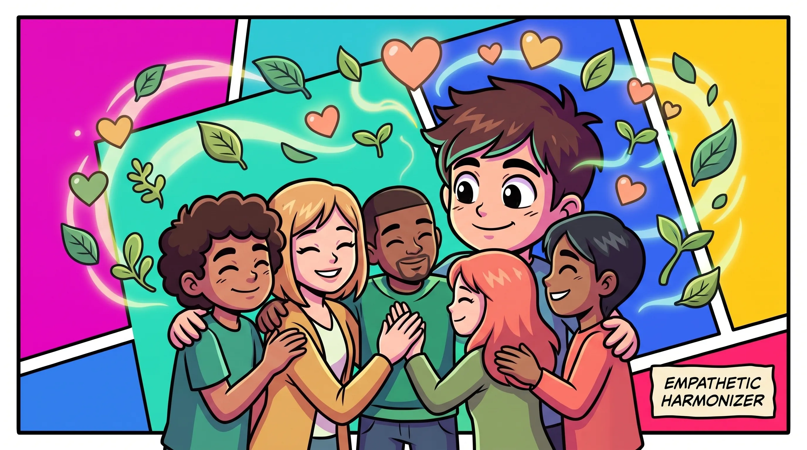

DIAGNOSIS RESULT
共感・協調型（調和役タイプ）

関わる人の感情や力関係を敏感に察知し、チームの心理的安全性を高める天性のファシリテーターです。全員が納得できる合意形成を導き出し、組織の潤滑油として力を発揮します。
向いている環境・職能：
人事・採用、カスタマーサクセス、スクラムマスター、広報、カウンセラー、チームマネジメント
結果を画像付きでXにポスト
人事・採用、カスタマーサクセス、スクラムマスター、広報、カウンセラー、チームマネジメント